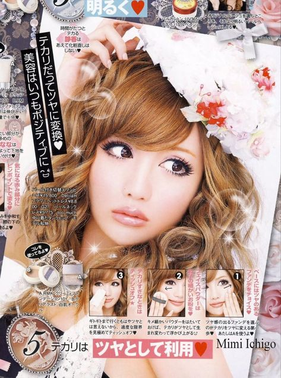
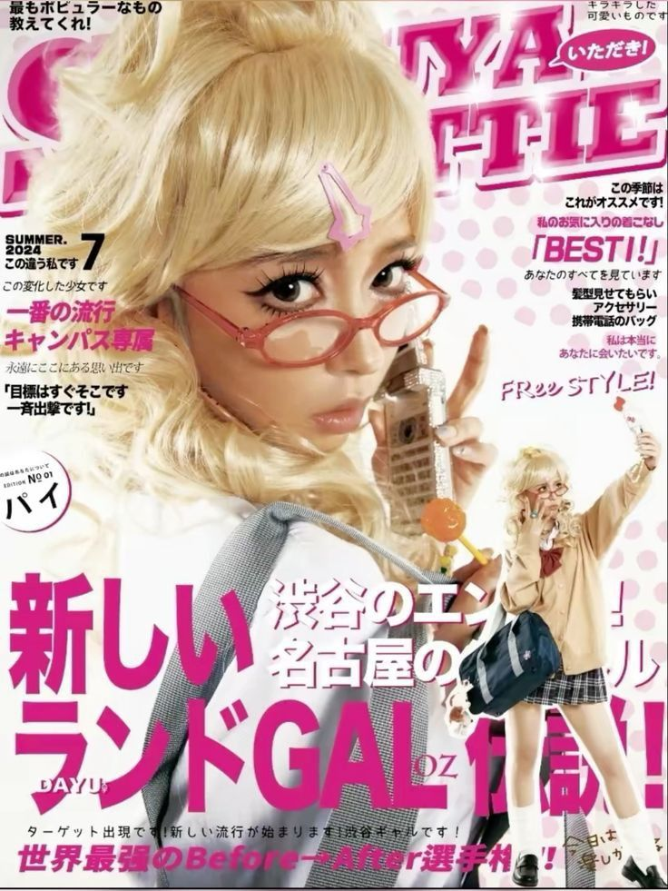
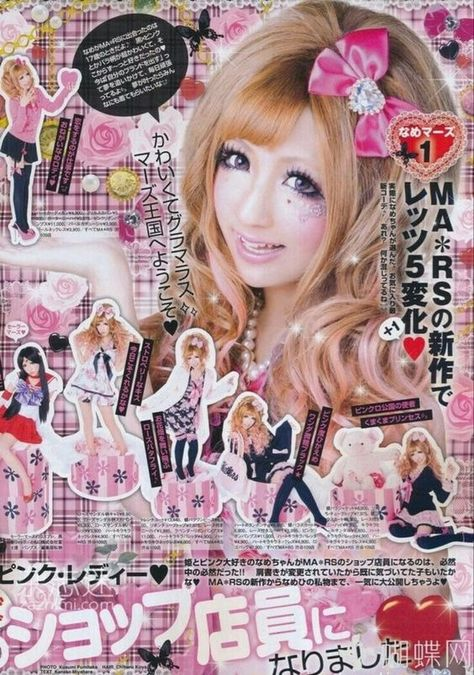
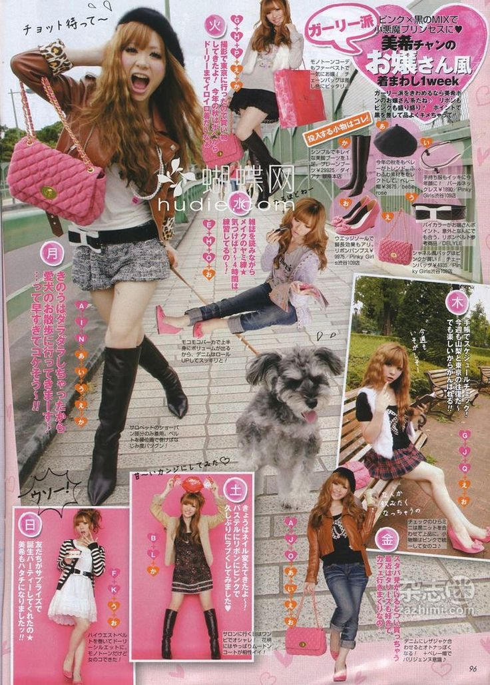
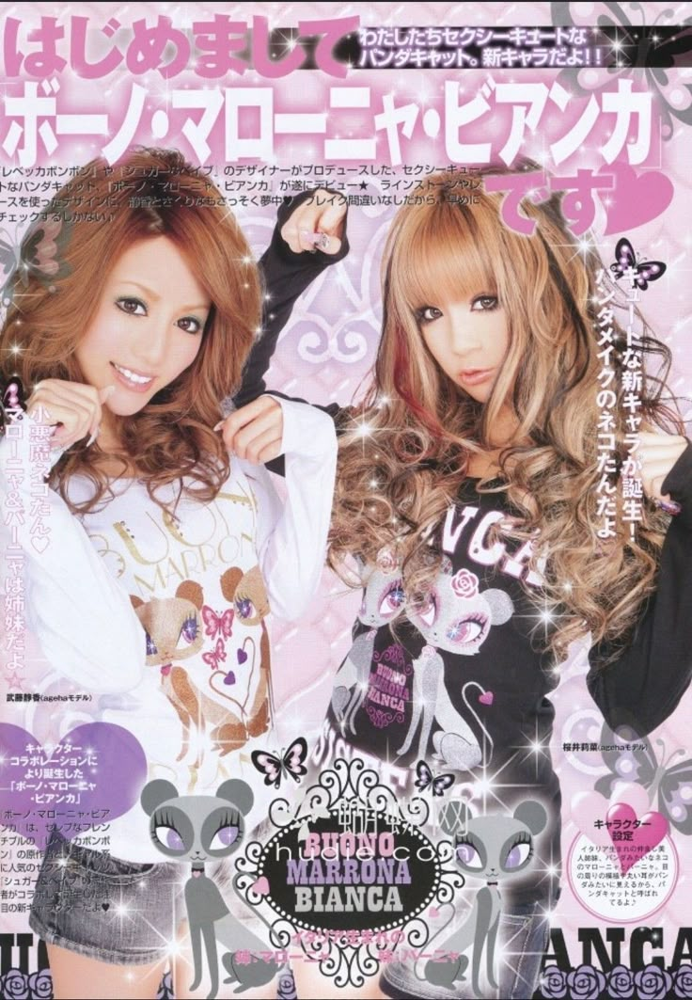
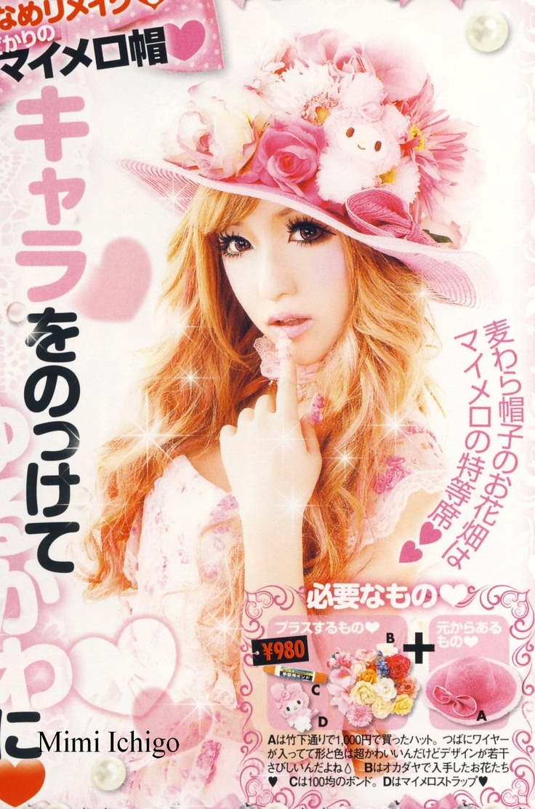
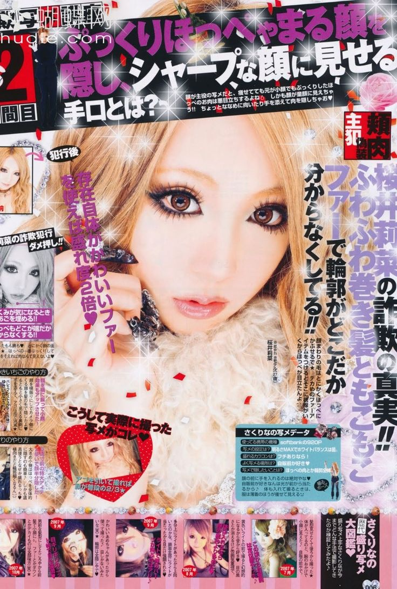
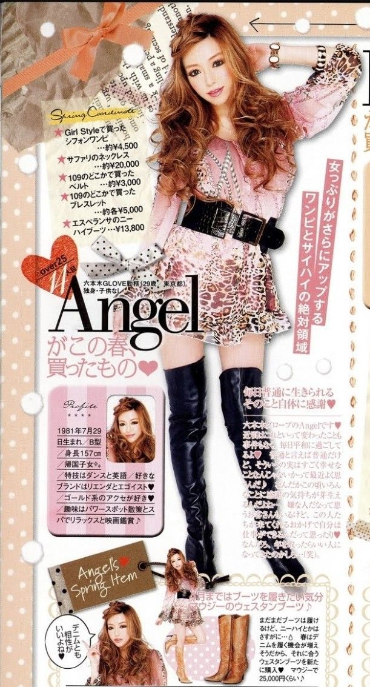
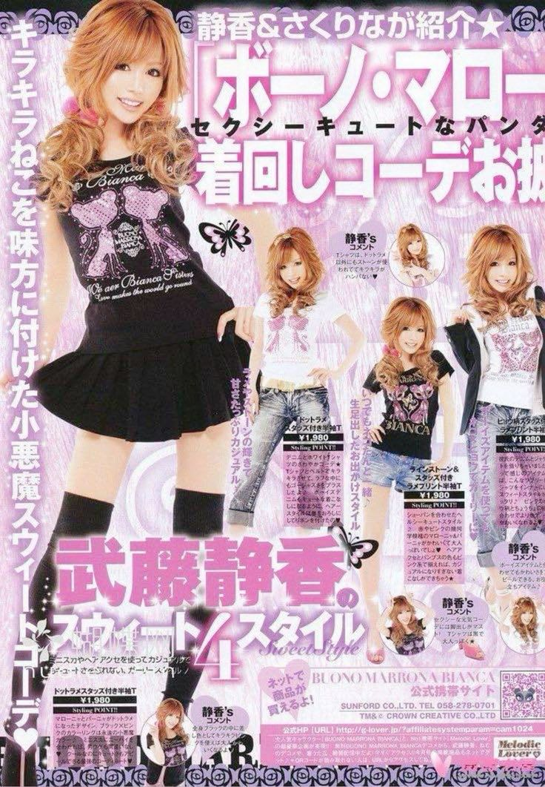

<!DOCTYPE html>
<html lang="en">
<head>
    <meta charset="UTF-8">
    <title> divs </title>
    <link rel="stylesheet" href="mob.css">
	<meta name="mob" content="width=divice=width,user-scalable no, initial-scale=1.0, mininum-scale=1.0" >

</html>
	
 <nav>
        <ul>
		<li><a href="#">Inicio</a></li>
		<li><a href="#">Informacion</a></l>
		<li><a href="#">Historia</a></li>
		<li><a href="#">Contacto</a></li>
		<li><a href="#">Sobre nosotros</a></li>
	 </ul>
    </nav>
	</body>

	
<div class="bue"> j </div>


<p> 
</p>
  
  
</head>
<body>
<br>
<header>


	<audio controls autoplay loop>
  <source src="Yahman Hard Bass (feat. Blacky Taiki & 崖の上のオニョ).mp3" type="audio/mpeg">
</audio>

<center><h1>LAS GYARU
<br> MODA JAPONESA DE LOS 2000 </h1></center>
<br>
<br>
	<div class="al"> hh </div> 
	
	<br>
	<br>

</header>

<link rel="preconnect" href="https://fonts.googleapis.com">
<link rel="preconnect" href="https://fonts.gstatic.com" crossorigin>
<link href="https://fonts.googleapis.com/css2?family=Cabin+Sketch:wght@400;700&display=swap" rel="stylesheet">

<div class="main">
  <center><h2> MODA </h2></center>
  <p> Gyaru (ギャル) es un término japonés derivado de la palabra inglesa "girl" y representa un estilo de moda juvenil y urbano practicamente siempre liderado por mujeres jóvenes que surgió en Japón en las décadas de 1970 y 1980. Este movimiento cultural y estético se caracteriza por su audacia al revelarse contra una encorsetada sociedad japonesa, donde el rol de la mujer difícilmente se salía de ser ama de casa, llevar el pelo negro y ropa modesta. Su marcada inclinación hacia la autoexpresión a través de la vestimenta, el maquillaje y el estilo de vida revolucionó las calles desde su aparición. Si bien la moda gyaru ha evolucionado significativamente a lo largo de los años, adaptándose a nuevas influencias y tendencias, siempre ha mantenido su esencia de rebeldía e individualidad, convirtiéndose desde su origen en un símbolo de creatividad, subversión y ganas de pasarlo bien siendo una misma.
 </p>
  </div>
 
 
 <div class="aside">
 <center><h3> ¿Qué es el Gyaru?  </center></h3>
 <br>A principios de los años 70, las jóvenes en Japón comenzaron a adoptar 
 un estilo de vida y moda que desafiaba los estándares conservadores predominantes.
 Este movimiento, conocido como gyaru (ギャル), emergió como una poderosa declaración
 de independencia y autoexpresión para las mujeres jóvenes en una sociedad que aún 
 valoraba fuertemente la conformidad y la modestia.El término gyaru proviene 
 de la pronunciación japonesa de la palabra inglesa "girl" y se convirtió 
 en un símbolo de rebeldía juvenil desde su inicio. Inicialmente, el gyaru
 se manifestó con un bronceado artificial, un rasgo distintivo que desafiaba 
 la tradicional apreciación de la piel clara como ideal de belleza. Este bronceado,
 conseguido a través de métodos como el uso de camas solares o cremas autobronceadoras,
 representaba una ruptura con las normas establecidas y subrayaba la búsqueda de una 
 identidad individual y liberada.Además, alejaba a los hombres que tradicionalmente
 habían visto a las mujeres como sirvientas y amas de casa o como objetos sexuales. 
 De esta forma, adoptando rasgos más agresivos en su apariencia, valiéndose de maquillaje,
 bronceados, tintes, cardados, extensiones, faldas muy cortas o uñas muy largas, 
 conseguían que los chikan (acosadores) las dejaran vivir con lo único que ansiaban: libertad.
Con el tiempo, la imagen de la gyaru, unida a sus declaraciones de libertad sexual, 
volvió a ver a estas mismas mujeres como objetos de deseo y consumo por parte de 
los hombres en un ciclo sin fin. En este ciclo, las propias subversivas muchacha
 nunca podrán dejar de reclamar un espacio seguro para ellas en una sociedad 
 clasista, machista y estructuralmente patriarcal.

</p> </p>
  </div>
  
  
  
  <div class="footer">
  <center><h4>Historia del Gyaru,
<br>  las reinas de Shibuya
<br>Inicios del Gyaru </h4></center>
  <p> En Shibuya, un distrito de Tokio conocido por su vibrante vida nocturna y como epicentro de la cultura juvenil, el gyaru encontró un terreno fértil para su expansión y aceptación. Si bien al principio frecuentaban la línea Toyoko de manera más underground durante las décadas de 1980 y 1990, Shibuya se consolidó como un centro de moda y estilo de vida juvenil, con tiendas de ropa de diseñadores emergentes, boutiques de moda alternativa y salones de belleza innovadores proliferando en la zona. La diversidad y originalidad en la moda eran celebradas, convirtiendo a Shibuya en el lugar ideal para experimentar con nuevos estilos y tendencias.

Las primeras revistas dedicadas al gyaru y la popularidad que estas habían ganado entre los fans de la moda  alternativa del momento hicieron de Shibuya la pasarela perfecta para el desfile de estas vibrantes jóvenes, quienes poco a poco comenzaban a ser reconocidas como modelos, cantantes y celebridades dentro de este movimiento que sus hermanas mayores habían comenzado al revelarse ante Japón. Las gyaru estaban encontrando su lugar en la sociedad, al menos físicamente, entre Hachiko y el icónico Shibuya 109.

El Shibuya 109, inaugurado el 11 de abril de 1979, alberga una amplia variedad de tiendas de moda, boutiques y salones de belleza especializados en tendencias contemporáneas y estilos únicos. Sus más de 10 plantas llenas de moda, complementos, maquillaje y espacio para la creatividad y la expresión hacen de este centro comercial un lugar único en todo Japón. Sus cafeterías con el mejor Jpop sonando de fondo, purikuras para tomarte fotos con tus amigas o las muchas pop-ups que los artistas más reconocidos ponen constantemente hacen del Shibuya 109 un aliado perfecto para las gyaru y un lugar de visita obligatoria para cualquiera que quiera sentir vibrar la cultura pop japonesa dentro de sí mismo, sobre todo si es por primera vez
</p>
 
 </div>
 


<div class="lol"> <center><h4> Popularidad y llegada a <br> occidente en los 2000 </h4></center><p> El gyaru se popularizó enormemente en los años 2000 debido a una combinación de factores sociales, culturales y mediáticos. Durante esta década, muchas jóvenes japonesas buscaban formas de expresar su individualidad y rebelarse contra las normas sociales conservadoras. El gyaru, con su estilo audaz y a menudo provocativo, ofrecía una vía de escape y una manera de desafiar las expectativas tradicionales sobre la apariencia y el comportamiento de las mujeres, siguiendo la estela de sus hermanas mayores en los 80 y 90.

La globalización y la creciente influencia de la cultura occidental también jugaron un papel importante. Las jóvenes japonesas comenzaron a inspirarse en las modas y tendencias de Occidente, adaptándolas a su propia cultura y creando algo único. Esto, a su vez, hizo que la estética gyaru se volviera atractiva no solo dentro de Japón, sino también en el extranjero.

El uso de internet se expandió rápidamente en los años 2000, y los foros, blogs y las primeras redes sociales permitieron a las jóvenes gyaru conectarse, compartir consejos de moda y belleza, y difundir tendencias más rápidamente que nunca antes. Aunque plataformas como TikTok e Instagram se popularizaron más tarde, las primeras versiones de redes sociales como MySpace y Fotolog y sitios de blogs permitieron que la cultura gyaru se extendiera más allá de Japón gracias a los fans occidentales del país que, maravillados con los estilos de moda tan distintos a sus países que en él descubrían no dudaron en compartirlo con sus amigos en todo el mundo.

Celebridades como Ayumi Hamasaki y Koda Kumi adoptaron elementos de la estética gyaru en su estilo personal y en sus presentaciones, ayudando a popularizarla entre sus fans. El look de estas artistas, que incluía maquillaje dramático, cabello teñido y modas vanguardistas, resonó con el espíritu del gyaru y ayudó a consolidarlo como una tendencia dominante entre las jovenes del país, ahora para ser una chica de moda en Japón, para ser la guapa, tenías que ser gyaru.


Sin embargo, a medida que avanzaba la década de 2010, la información sobre el gyaru y la cultura pop japonesa comenzó a desaparecer gradualmente en Occidente. Además, en Japón, las actrices y idols del momento dejaron de imitar el estilo gyaru, lo que provocó una pérdida de fuerza y popularidad. La estética gyaru empezó a ser vista como anticuada y fue reemplazada por nuevas tendencias de moda y belleza más alineadas con una imagen más natural y sofisticada, el nuevo tropo de belleza, Yamato Nadeshiko, era el de una chica callada, bella natural y sencilla, sumisa y algo infantil, el cual sigue durando hasta nuestros días. Este declive contribuyó a que el gyaru perdiera su prominencia tanto en Japón como en el extranjero.

</div>








<div class="de"> <center><h4> Moda gyaru en 2024</h4></center><p> Actualmente, el movimiento gyaru está viviendo un resurgir de popularidad tras la desaparición que había sufrido en los últimos 10 años, gracias a las redes sociales (principalmente TikTok e Instagram). Estas plataformas han sido el motivo del resurgir de la estética gyaru. Sus cantantes, expresiones al hablar y forma de maquillarse y vestirse han sufrido un boom de popularidad ya no solo en Japón, sino también en el extranjero. Actualmente, existe una fuerte corriente de inspiración en el gyaru en Corea del Sur entre algunos de los grupos emergentes de chicas de K-pop del momento, haciendo que el público general de Occidente ahora asocie la estética gyaru a las idols de Corea del Sur.

Si bien la popularidad de su estética ha crecido mucho en los últimos años, no ha sido así con su historia y definición. Mucha gente que consume contenido gyaru ni siquiera sabe qué es, aunque revistas como EGG Magazine están tratando de cambiar esto en sus propias redes sociales con trends virales, mostrando al mundo desde Japón qué es el gyaru en 2024.

Queda mucho por hablar sobre estas maravillosas chicas, sobre sus homónimos chicos, los gyaru-o, en qué momento los mass media empezaron a copiar sus estilos en lugar de señalarlas como rarezas, y cómo todo esto se fue diluyendo hasta lo que queda hoy día, donde solo unas pocas siguen llevando el gyaru con la cabeza bien alta. Espero que los lectores de JaponPopSuki se enamoren de estas chicas y su capacidad para plantar cara a la sociedad japonesa tanto como nos enamora a nosotras. ¡Larga vida al Gyaru!


</div>

<footer> realizado por ana cofre
    <h3>Contactos</h3>
    Teléfono: 123-456-7890
    Email: lollll@gmail.com
    <a href='https://tiktok.com/tewkraig' target='_blank'>Tiktok</a>
    <a href='https://instagram.com/ser1zaw4' target='_blank'>Instagram</a>
</footer>
</body>
</html>

